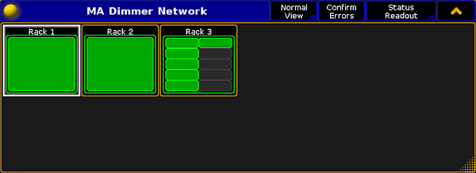
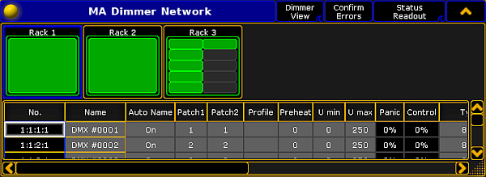

For more information on how to open the MA Dimmer Network see Network dimmer.
To toggle between the views, tap the View button in the title bar of the window MA Dimmer Network.
Normal View
The Normal View solely displays the dimMA hierarchy.

Open Normal View
For more information on the dimMA hierarchy see Network dimmer.
Dimmer View
To toggle to Dimmer View, tap Normal View in the title bar.

Open Dimmer View
The Dimmer View displays both:
dimMA hierarchy and
Dimmer channels
Hint:
To edit the dimmer channels, tap and hold or press Edit and tap a cell of the corresponding column. Depending on which setting is being edited,either the calculator opens, On is displayed, or the cell is empty.
Settings
Hint:
The following settings can also be edited in a module. For more information see Edit a module.
No.:
The number consists of a rack, crate, module and dimmer. For example, 1:1:3:4 is to be understood as rack 1, crate 1, module 3, and dimmer 4.
Name:
Is the name of the dimmer channel in the log files and in the configuration.
Auto Name:
If you have changed the name of the dimmer channel in the column Name, toggling Auto Name to On takes over the original name of the dimmer channel.
Patch1 and Patch2:
Reflect the patching of the two input slots of an NDP system.
Hint:
Patch higher quantities of dimmer channels by multi selecting the cells in the columns Patch1 and Patch2. Changing the patch address once automatically adjusts the following patch addresses.
Profile:
Create and edit profiles – assigned to each dimmer channel – in this column.
Assign the same profile in several dimmer channels:
Multi select the cells in the column.
Press Edit and tap a cell in the column Profile.
The pop-up Select Profile opens.
Edit profile
Select a profile and tap Choose Profile.
Tap in the upper right corner of the pop-up.
The profile is now applied in several dimmer channels.
Is the voltage level that is used to permanently preheat the fixtures. The value of the voltage level is displayed in percent.
U min and U max:
Limit the range of the dimmer channels in these two columns.
Important:
These values apply if the mode is set to Dim.
Panic and Control:
The values of Panic and Control are stored in the NDP and are solely displayed in this view.
Type:
Change the type of the dimmer channels in this column.
Important:
Make sure the patching here matches the patching in the setup of the console. Both settings have to correspond to each other.
Select the type, tap and hold a cell in the column Type.
The pop-up Select Type opens.
Select a type
Tap to select a type.
The types are:
8bit: The dimmer channel is controlled in the 8bit mode containing 256 increments.
8bit/S: The dimmer channel is controlled in the 8bit mode and contains an additional dimmer channel that triggers the values that were changed with a set fade time. This type defines the fade time of the dimmer channel. If the additional dimmer channel is set to 100 %, the values are faded within 5 minutes. Setting a lower value on the additional channel, reduces the fade time linearly.
16bit: The dimmer channel is controlled in the 16bit mode containing 65536 increments.
16bit/S: The dimmer channel is controlled in the 16bit mode and contains an additional dimmer channel that triggers the values that have been changed with a set fade time. For more information on the fade time see the type 8bit/S.
Mode:
Adjust the mode of the dimmer channel in this column.
To set a mode, tap and hold a cell in the column Mode.
The pop-up Select Mode opens.
Select a mode
Tap to select a mode.
The modes are:
Off: Disables any reaction toward incoming control data.
Dim: Represents the normal dimmer mode.
Switch: The dimmer behaves like a switch. The firing angle is 90° phase of the sinus voltage of the first sine cycle.
NonDim: The dimmer behaves like a switch. The firing angle is 0° phase of the sine cycle.
Threshold:
Defines the threshold value of the input control data. Threshold influences the behavior of the dimmer channel if it is in the NonDim or the Switch mode.
No Load:
Masks error messages if the minimum base load of a dimmer is not connected to the dimmer channel. It also masks error messages if the bulb is burnt out.
Fuse:
Masks error messages if the fuse (MCB) of the dimmer channel has blown.
Overload:
Masks error messages if an overload occurs on the dimmer channel you have selected.
Excess DC:
Masks error messages if there is bias voltage, for example if a thyristor fails.
Response:
Smoothes out changes in the control signal. Fixtures connected to this dimmer channel respond slower. Entries between 0 and 5 are interpolated to 0.
Important:
The error reporting masks No Load, Fuse, Overload, and Excess DC affect the log files and the status readout.
Log View
To toggle to Dimmer View, tap Dimmer View in the title bar.
Open Log View
The Log View displays both:
dimMA hierarchy and
Messages along with the corresponding date
The messages may be displayed in white, yellow, or red.
White indicates regular messages
Yellow indicates warning messages
Red indicates error messages
For more information on the display of errors see Errors.
To change to Normal View, tap Log View in the title bar.